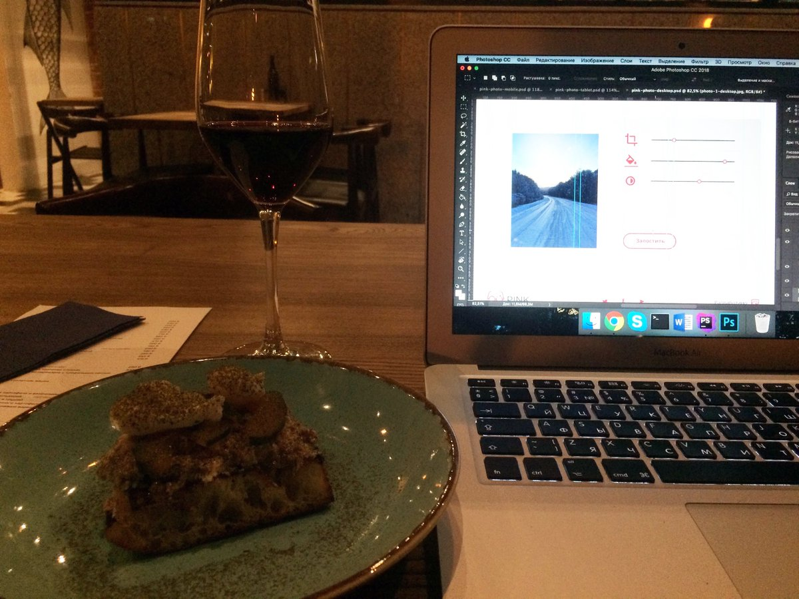

What is happening?!
Show 58 Tweets
2018 год, высокорангово вкатываюсь во фронтенд
В 2 часа ночи, с бокалом вина, в Туле, доверстываю блядский проект Pink на курсе по адаптивной вёрстке в @htmlacademy_ru
Кстати курс все еще жив, здоров и супер-актуален!
https://htmlacademy.ru/intensive/adaptive
